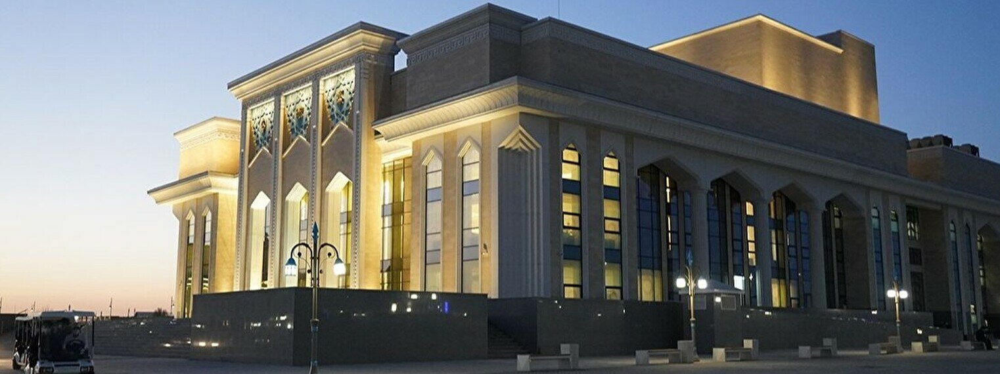

My Hometown Turkistan
7 Coolest Places to Visit
Turkistan is one of Central Asia's oldest historical cities. It is located in Kazakhstan's south,
800 kilometers from Almaty. The city holds a special place in the hearts of Turkic peoples. If you are
visiting Turkistan for the first time, be ready to discover: beautiful historical buildings,
masterpieces of ancient architecture, natural objects of incredible beauty, one-of-a-kind museums,
restaurants of various cuisines, and an incredible atmosphere.
1. Mausoleum of Khoja Ahmed Yasawi
 See Other Religious Attractions
See Other Religious Attractions
2. Karavan Saray
 Official site
Official site
3. President's Park
 Capture the view of the whole park
Capture the view of the whole park
4. Akmeshit Cave
 A unique and mysterious place
A unique and mysterious place
5. The Intimate Ruins of Sauran
 The ancient city
The ancient city
6. Turkistan Arena
 Description
Description
7. Music and Drama Theater

Official site
THE BEST HIGH-END HOTELS IN TURKISTAN
If you’re looking for some luxury in a high-end hotel, I would recommend:
KARAVANSARAY Turkistan Hotel
Hampton By Hilton Turkistan